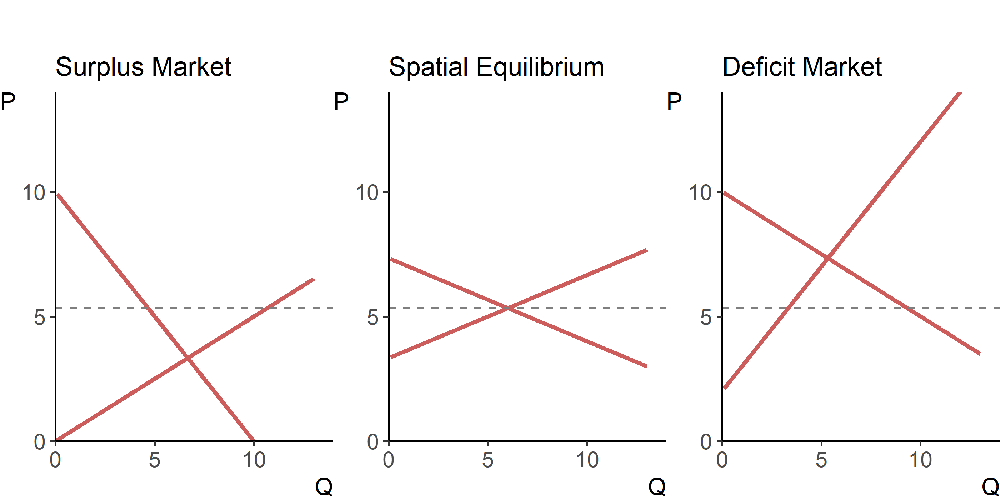

Tomek and Kaiser (2014, chap. 8)
Norton, Alwang, and Masters (2022, chap. 16)
Agricultural commodities typically are produced in geographically diverse locations, and can be costly to transport. Relationships among geographically distant, or spatially separated markets are often examined by comparing prices in these markets (which, sometimes, may be the only trade data available).
To the extent that supply and demand forces differ across markets, prices of agricultural commodities can (and do) vary spatially. Given a competitive market structure, spatial price relationships are determined by transfer costs among markets. In addition to the transportation costs, components of the transfer cost also include other transaction costs related to contracting, insurance, financing, etc.
Spatial arbitrage, through the actions of economic agents, ensures that the price differential between regions \(i\) and \(j\), \(p_{jt}-p_{it}\) at any given time, \(t\), does not exceed the transfer costs, (\(\tau_{ijt}\)): \[p_{jt}-p_{it} \le \tau_{ijt}.\] This is referred to as long–run competitive equilibrium. The condition will hold as an equality if the two regions engage in a trade with each other, thereby exhausting the rents to spatial arbitrage. That is, when trade occurs, price differentials should move one-for-one with the costs of spatial arbitrage; but when no trade occurs, there may be no correlation among market prices even though competitive equilibrium holds.
Market integration, defined as tradability or contestability between markets, is a (related but) slightly different concept from competitive spatial equilibrium. This implies the transfer of excess demand from one market to another, manifest in the physical flow of commodity, the transmission of price shocks from one market to another, or both.
Spatial equilibrium models can help determine the optimum trading patterns, given the supply and demand conditions within each country (market). We illustrate this using two competitive markets.
Figure 4.1: Spatial Equilibrium
From the foregoing it follows that two spatially separated markets can be in equilibrium but not necessarily integrated (e.g., when the spatial arbitrage condition is satisfied but no trade occurs); they can also be integrated but not necessarily in equilibrium (e.g., when trade occurs but the rents to spatial arbitrage are not exhausted). When the integrated markets are in equilibrium, the law of one price (LOP) holds. The LOP suggests that, abstracting from transfer costs, regional markets that are linked by trade and arbitrage, will have a common, or unique price. While the LOP (in its strong form) rarely holds in practice, there is evidence for LOP among studies that explicitly account for transactions costs, as well as those that explicitly focus on traded rather than non-traded commodities.
Notably, price co-movement between two regions can arise for reasons other than those that link these regions via trade. On the other hand, prices that satisfy the LOP may not move together, if transfer costs are large and volatile. Finally, it is not necessary for two regions to be direct trading partners for an integration to be present. As long as these regions are part of a common trading network, they may be integrated just as strongly as if they were direct trading partners.
Several important implications follow. First, because trade will only occur when the price differential equals or exceeds the transfer cost, shocks to production or consumption may result in discontinious trade flows over time. Second, to the extent that trade takes place, the price differential will remain the same (and be equal to the transfer cost). Finally, integrated markets will be characterized by the simultaneous determination of prices, trade, and storage.
Key to the LOP is the notion of efficient markets. In general, efficiency is meant to imply that the allocation of resources is such that aggregate welfare cannot be further improved by reallocating of resources. In the context of spatial arbitrage, market efficiency is interpreted to imply that no opportunities for profits have been left unexploited by arbitrageurs. That is, the efficient market hypothesis assumes away profitable arbitrage opportunities. To that end, the LOP may not necessarily apply if buyers have less than perfect information about where to find the lowest price commodity; nor may they apply across international borders, because some goods are not transferable. These principles facilitate the so-called structure of prices—a function of the pattern of trade and transfer costs between regions that engage in trade.
Implications of the structure of prices are that: the lowest-cost source determines the price prevailing in each deficit market; producers sell in whichever market yields the highest net return; the price prevailing in each surplus producing area is the deficit market price less the cost of transferring a product to that market. Of course, the foregoing assumes a competitive market structure, with a homogeneous commodity, informed traders, and no barriers to trade.
Countries trade because some can produce certain commodities when others cannot (absolute advantage), or, more typically, because some can produce certain commodities more efficiently than others (comparative advantage).
In absence of transfer costs, the intersection of the excess demand and excess supply curves yields the world price. A more realistic scenario is trade with transfer costs. A way to think of the effect of transfer costs is by incorporating them into the supply function of the exporting country.
Transfer costs increase the price at which commodities are traded, and reduce the quantity of traded commodities. As a result, in an importing market, consumers receive less of the commodity for a higher price, and producers sell more of the commodity for a higher price; the opposite is true in an exporting market.
Gains from trade can be grouped into two categories: gains from exchange, and gains from specialization.
Drawing supplies from a world market allows access to a wider array of products at lower cost and perhaps with greater security of supply than can be produced by domestic industries. Lower prices from imported goods allow consumers to buy more goods from disposable income. Lower prices for imported raw materials, that are used to produce final goods, also benefit consumers by lowering prices of these final goods. All these facilitate greater savings, which lead to increased investment and greater economic growth.
Trade stimulates the expansion of low cost industries (and forces the contraction of high cost industries). Increase of the size of the market allows firms or industry to take advantage of economies of scale. Increase of competition provides greater emphasis on technological development and innovation, and results in increased skills of workforce.
| Demand | Supply | |
|---|---|---|
| Country A | \(Q_A=120-P_A\) | \(Q_A=P_A\) |
| Country B | \(Q_B=110-0.5P_B\) | \(Q_B=0.5P_B\) |
Page built: 2022-08-08 using R version 4.1.2 (2021-11-01)